"Tipos de Energias" Profesor: Eduardo Salazar Salinas
Energía mecánica: Este tipo de energía se asocia al movimiento y la posición de un objeto normalmente en algún campo de fuerza (por ejemplo, el campo gravitatorio). Se suele dividir en transitoria y almacenada.La energía transitoria es la energía en movimiento, es decir, la energía que se transfiere de un lugar a otro. La energía almacenada es la energía contenida dentro de una sustancia u objeto. La energía mecánica se genera a través de distintos procesos, como la combustión de combustibles fósiles en un motor de combustión interna, la conversión de energía eléctrica en energía cinética en un motor eléctrico, o la transformación de energía potencial en energía cinética al soltar un objeto desde una altura
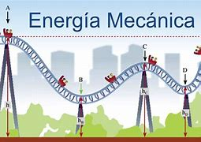
Energía cinética: Es un tipo de energía mecánica, que se se asocia a los cueros que están en movimiento. Si no se mueve, no posee energía cinética. Depende de la masa y de la velocidad del cuerpo, es decir, cuanto más pesada es una cosa, y cuanto más rápido se mueve, más energía cinética tiene. Puede transferirse de un objeto a otro cuando los dos cuerpos se golpean. El viento al mover las aspas de un molino es energía cinética.Esta energía se genera cada vez que un objeto se desplaza a través del espacio. Todo objeto que se mueve, desde una gota de lluvia hasta una nave espacial, posee energía cinética. Esta energía varía dependiendo de la masa del objeto y de su velocidad.
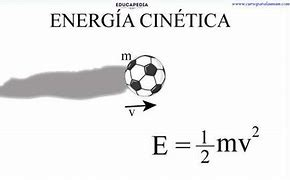
Energía potencial: La energía potencial también es un tipo de energía mecánica, concretamente la energía almacenada. Para entender la diferencia entre la energía cinética y la potencial. energía potencial eléctrica resulta de la fuerza eléctrica. Cuando se juntan dos o más cuerpos cargados eléctricamente, aparecen fuerzas eléctricas entre ellos que los atraen o los repelen. En consecuencia, los cuerpos ganan o pierden energía potencial eléctrica.
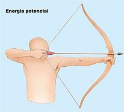
Energía gravitacional: También es importante comprender la diferencia entre energía potencial y la energía gravitatoria. Cada objeto puede tener energía potencial pero la energía gravitacional se almacena solamente en la altura del objeto. Cada vez que un objeto pesado se mantiene alto, una fuerza o poder es probable que lo mantenga en equilibrio para que no caiga.La energía gravitatoria o energía potencial gravitatoria (o gravitacional) es la energía potencial que tiene un objeto masivo en relación con otro objeto masivo debido a la gravedad. Es la energía potencial asociada al campo gravitacional, que se libera (convierte en energía cinética) cuando los objetos caen uno hacia el otro.
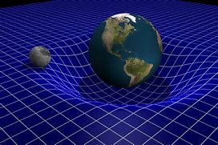
Energía sonora o acústica: La música no solamente nos hace bailar, sino que el sonido también contiene energía. De hecho, el sonido es el movimiento de la energía a través de sustancias en ondas longitudinales. El sonido se produce cuando una fuerza hace que un objeto o sustancia vibre y, por tanto, la energía se transfiere a través de la sustancia en una onda. La energía sonora se produce a partir de la vibración de las partículas que componen cualquier objeto. Por eso, las propiedades del material y las partículas que lo compongan determinarán el sonido que este genere. Así, objetos muy densos como los metales no producen el mismo tipo de sonido que la arena o la madera.
Energía eléctrica: La materia está formada por átomos, que están compuestos por electrones que se mueven constantemente. El movimiento de estos electrones dependen de la cantidad de energía que tiene, que es a lo que me refería con la energía potencial. Los seres humanos pueden provocar que estos electrones se muevan de un lugar a otro con medios especiales (materiales) llamados conductores, que transportar esta energía. No obstante, ciertos materiales no pueden transportar energía en esta forma, y se llaman aisladores. La energía eléctrica es la causada en el interior de los materiales conductores y provoca básicamente tres efectos: luminoso, térmico y magnético. La energía eléctrica es la que llega a nuestras casas y que podemos observar cuando se enciende una bombilla. . La electricidad es la energía generada por el movimiento de electrones en el interior de materiales conductores
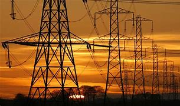
Energía térmica: La energía térmica se conoce como la energía que proviene de la temperatura de la materia. Cuanto más caliente esta una sustancia, más moléculas vibran y, por lo tanto, mayor es su energía térmica. La energía térmica se produce cuando intervienen procesos calóricos que actúan al entrar dos partes diferentes, que a su vez presentan diferente temperatura, las cuales colisionan entre sí generando la trasmisión cuerpo a cuerpo de las temperaturas
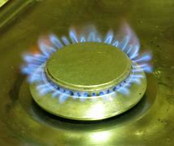
Energía química: La energía química es la energía almacenada en los enlaces de los compuestos químicos (átomos y moléculas). Se libera en una reacción química, produciendo a menudo calor (reacción exotérmica). Las baterías, el petróleo, el gas natural y el carbón son ejemplos de energía química almacenada. Normalmente, una vez que la energía química es liberada de una sustancia, esa sustancia se transforma en una sustancia completamente nueva. La energía química se produce a través de reacciones químicas entre moléculas de uno o más compuestos
Energía magnética: Es un tipo de energía que se origina en la energía que generan determinados imanes. Estos imanes crean campos magnéticos permanentes y así como energía que se puede utiliza en diferentes sectores. La energía magnética se produce como resultado del movimiento de electrones (carga eléctrica)
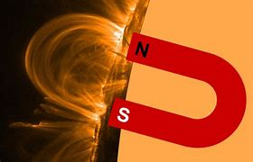
Energía nuclear: La energía nuclear es energía resultante de las reacciones nucleares y los cambios en los núcleos atómicos o de las reacciones nucleares. La fisión nuclear y la desintegración nuclear son ejemplos de este tipo de energía. Esta fuente de energía puede producirse de dos maneras: mediante fisión (cuando los núcleos de los átomos se dividen en varias partes) o mediante fusión (cuando estos se fusionan)
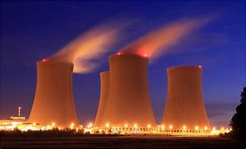
Energía radiante: La energía radiante, también conocida como energía electromagnética que poseen las ondas electromagnéticas. Por ejemplo, cualquier forma de luz tiene energía electromagnética, incluyendo partes del espectro que no podemos ver. La radio, los rayos gamma, los rayos X, las microondas y la luz ultravioleta son otros ejemplos de energía electromagnética. Se produce principalmente a través de la radiación solar, donde el sol emite radiación electromagnética en diversas frecuencias, incluyendo luz visible, infrarroja y ultravioleta. Esta radiación es captada por la Tierra y puede ser aprovechada para generar energía eléctrica.
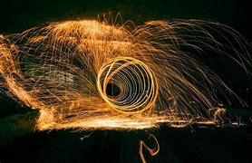
Energía eólica: La energía eólica es un tipo de energía cinética que se obtiene a partir del viento. Se emplea para producir otro tipo de energía, principalmente energía eléctrica. Es un tipo de energía energía renovable, y el principal medio para obtenerla son los “molinos de viento” que pueden variar en su tamaño.
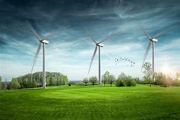
Energía solar: La energía solar también es un tipo de energía renovable, que se obtiene mediante la captación de la luz y el calor emitidos por el Sol. Suelen emplearse paneles solares para su recaptación y existen dos tipos de energía solar: Fotovoltáica: transforma los rayos solares en electricidad mediante el uso de paneles solares. Fototérmica: emplea calor para hacer energía gracias a los colectores solares Termoeléctrica: convierte el calor en energía eléctrica de forma indirecta.
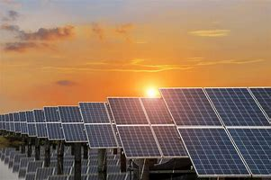
Energía hidráulica: De nuevo, un tipo de energía renovable, que posee energía potencial gravitatoria y, si se deja caer, también contiene energía cinética, pues emplea el movimiento del agua para producir esta energía.
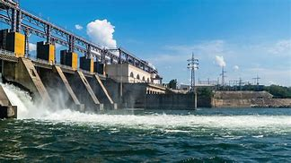
Energía lumínica: Es la energía transportada por la luz, pero no debe confundirse con la energía radiante, puesto que en esta última no todas las longitudes de onda comportan la misma cantidad de energía. La energía luminosa es capaz de broncear o quemar nuestra piel, por lo que puede emplearse, por ejemplo, para fundir metales.
 Proyecto Transversal
Proyecto Transversal